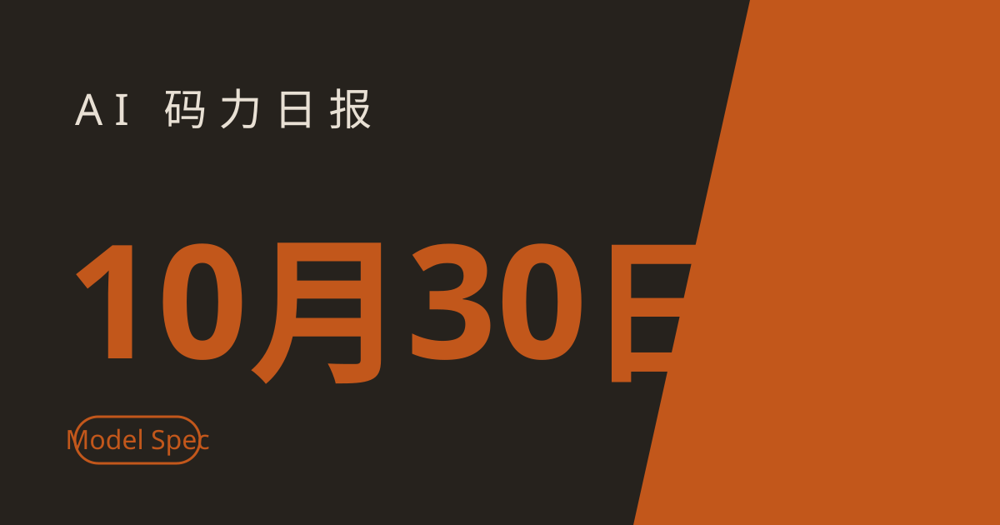

AI 码力日报 · 2026年10月30日

⚡ 一句话速览
- OpenAI 重写 Model Spec：10 月 29 日更新的行为准则把"忠于人类意图"立为核心，模型不该只字面执行指令，还要理解用户、开发者与 OpenAI 各自真正想要什么。
- Anthropic 给企业管理员上了三件套：Claude Enterprise 新增 Smart Reports、员工内测问卷与团队共享预算，用量超了能提前预警、到顶就停。
- Google：Gemini 聊天里能直接改文件了：10 月 29 日起，PDF、Docs、表格、幻灯片、Markdown 与代码不用跳出聊天就能生成、预览和编辑，PDF 在手机上也能改。
- Mistral 万亿参数权重上架：Mistral Large 4（Le Chonk，约 1.05 万亿参数 MoE）10 月 29 日在 Hugging Face 开放下载，API 输入每百万 token 仅 0.7 美元。
🤖 今日 AI Coding 动态
OpenAI 重写 Model Spec：别只听指令，要听懂人到底想要什么
跟你有啥关系：你每天跟模型打交道，感觉它"听话但没听懂"的时候，根子往往在这里——OpenAI 这次把行为准则的组织方式整个改了。OpenAI 10 月 29 日更新 Model Spec，这份公开文件规定了模型应该怎么行事：新版围绕五个核心价值重排——忠于人类意图、最小化伤害、诚实与透明、人类自主、尽责照护，其中"忠于人类意图"是地基：模型要理解用户、开发者与 OpenAI 各自的意图与价值，而不是字面执行指令。新版还收紧了有害内容、AI 劝说、深度伪造协助与自动生成虚假信息的边界，并要求模型更明确地承认不确定性、提醒信息可能过时、高风险决策指向权威来源。OpenAI 自己也承认，现有模型尚未完全体现新版准则，要靠后续微调与训练方法逐步内化。我的判断：这份文件值得当成"验收标准"来读——以后模型在边界问题上变保守或变啰嗦，先别急着骂降智，对照这五个价值看它是在执行哪一条，再决定是换提示词还是换模型。原文链接
Anthropic 给 Claude 企业版上了管理工具箱：用量、反馈、预算一次管起来
跟你有啥关系：公司里 Claude 用量一上来，最先失控的从来不是模型质量，而是"谁在烧多少钱、烧出了什么效果"没人说得清。Anthropic 10 月 29 日为 Claude Enterprise 推出三项管理功能，全部即日起向企业客户开放：Smart Reports 分析团队对话、找出可复用的工作流并推荐做成 skills，官方口径是改进流程、不是考核个人；应用内问卷让管理员直接向员工收集反馈——省了多少时间、哪些任务还想用 AI，问题、对象与导出都可定制；团队共享预算（pooled budgets）允许员工在个人限额内动用团队剩余预算，共享预算到 50%、75%、95%、100% 时给账单管理员发邮件预警，到顶即停、超额需在 Claude 里申请管理员批准。我的判断：这套东西真正的买家不是一线开发者，而是要向财务交代 AI 账单的人——如果你正在推动公司采购 Claude，先把 Smart Reports 的流程复用报告和预算预警这两页截给老板，比谈模型跑分管用。原文链接
DeepSeek 与 Moonshot 被曝用 GPT-6 Astra 蒸馏最新模型：蒸馏之争摆上台面
跟你有啥关系：你用的开源模型、API 平替便宜的根子，可能就来自这场争端——而这直接关系到这些模型以后还能不能这么便宜、这么开放。路透社 10 月 29 日援引 The Information 的报道称，DeepSeek 与 Moonshot 在训练最新模型时大量使用了 OpenAI GPT-6 Astra 的输出：Moonshot 上周发布的 Kimi K3.1 Pro 与 DeepSeek 10 月 17 日上线的 V4.1-Flash 1017 都受益于对 Astra 的蒸馏；OpenAI、DeepSeek、Moonshot 均未回应置评请求。背景是 OpenAI 9 月 30 日已在博客中称，把一波始于 7 月的蒸馏行动与 Moonshot 相关人员联系起来；Anthropic、OpenAI、Google 此前都公开反对这种做法，认为它让对手以更低成本更快复制前沿能力。我的判断：先别站队——对开发者最实际的影响在两处：依赖蒸馏链条的模型后续合规风险会传导到 API 价格与开放程度；选国产平替做主力之前，先确认它的能力来源与授权链条，别等到某天接口变了才发现架构里只有一个供应商。原文链接
OpenAI 与 Anthropic 在加州"谁能拉闸"上分歧：一个要法院、一个要开发者自己动手
跟你有啥关系：这不是遥远的政策吵架——它决定了未来某天模型出事时，是"先停下来再论证"，还是"先论证再停下来"，而你的线上服务就跑在这些模型上。两家公司近日分别向加州州长提交了关于前沿 AI 安全的建议，立场直接对撞：Anthropic 在 10 月 15 日的建议中主张，州总检察长在独立评估认定模型有近期灾难性风险时，应能向法院申请暂停模型的部署、内部使用或继续开发；OpenAI 在 10 月 20 日的信中则主张修改加州 SB 53 法案，要求前沿开发者自己维护有效的关闭控制（shutdown controls），并在不安全条件出现、且没有更轻干预手段时有义务使用它。两家都支持独立安全评估与扩大事故上报。我的判断：Anthropic 的路线是"外部刹车"，OpenAI 的路线是"内部刹车"——前者更适合兜底灾难性风险，后者反应更快；对开发者来说，真正要盯的是最终法案写了哪条，因为它会变成你签的服务条款与事故响应流程里的硬性要求。原文链接
📱 AI 应用新品
Gemini 聊天里能直接改文件：手写笔记变学习指南，不用再跳应用了
是什么：Google 10 月 29 日给 Gemini 应用加了文件生成、预览与编辑能力：PDF、Google Docs、表格、幻灯片、Markdown、TXT 与代码，都不用离开聊天就能处理；文件可全屏展开直接改字，也能划选一段让 Gemini 改文字、改视觉或回答追问。解决什么问题：以前 Gemini 生成文件后要改，还得跳去别的 App——现在官方示例就是：上传手写课堂笔记，Gemini 生成一份 PDF 学习指南，你直接在聊天里改、划选表格让它转成图表。免费额度/价格：面向所有 Gemini 应用用户、所有支持语言，未提及档位限制与价格（截至撰写时）。适合谁：天天在聊天里起草文档、做学习资料、改表格的人；注意一个边界：手机上只有 PDF 能编辑，Docs、表格与幻灯片目前仍需网页版。原文链接
Claude 上车了：CarPlay 语音 + 下拉搜索，手机端一次改了不少地方
是什么：Anthropic 10 月 29 日更新 Claude 的 iOS 与 Android 应用：iPhone 语音模式现已支持 Apple CarPlay，开车时能语音问答不用动手；语音在嘈杂环境与小声说话时识别更好、回答更快，非英语语音也更自然；iPhone 即将上线下拉搜索，找历史对话、项目与设置不用一层层翻。解决什么问题：移动端用 Claude 最烦的两件事——开车没法用、旧对话找不到——这次都动了；此外 iPad 与 iPhone Duo 上 Claude 生成的内容改为在聊天旁并排打开、可全屏查看，应用还支持多账号登录切换，并新增 24 种语言、总计 33 种。免费额度/价格：应用内功能更新，随 Claude 账户走，未提及额外收费（截至撰写时）。适合谁：已经在手机上用 Claude、尤其开车通勤时想顺手问两句的人；CarPlay 只是入口，复杂任务还是停车再细聊。原文链接
🐑 今日羊毛
Droid CLI 新号试用额度 + 免费开源模型兜底：一个终端 agent 能薅两层
一句话：Factory 的 Droid CLI 新账号有免费试用额度，额度烧完还能切到免费的 Droid Core 开源模型池继续跑，10 月 20 日核验过的免费档地图里仍在列。
- 怎么薅：注册 Droid CLI 领新号试用额度，用 Claude Sonnet 5.5、GPT-6.1 Sol、Gemini 3.1 Pro 等多模型目录跑终端任务；额度触顶后会话可回落到 Droid Core 开源池（含 Qwen、DeepSeek、Kimi、GLM 等）继续用。直达链接
- 有效期：试用额度按新号发放（截至撰写时），具体数额以注册页为准，过期不候
- 适合谁：想在终端里直接跑 agent、又不想先绑卡的开发者；先在小仓库上试，别一上来就把大重构交给试用额度
Anthropic 赞助的 Claude 中小企业工作坊：佛罗里达免费半天课，结课送一个月 Claude Max
一句话：Anthropic 赞助的 Claude SMB 工作坊在迈阿密、奥兰多、杰克逊维尔开免费场，带一个每周重复任务去、现场在自己电脑上跑通，获批参加者送一个月 Claude Max。
- 怎么薅：在工作坊页面报名（名额有限、报名需审核），带一个每周重复的任务去现场，4 小时内由 Anthropic 认证讲师带着在 Claude 里跑通。直达链接
- 有效期：2026 年 10 月 29 日公布的系列场次（截至撰写时），以报名页场次为准
- 适合谁：佛罗里达 5–50 人规模小企业的负责人；不在这三个城市就别硬凑，重点是"带任务去、现场跑通"这个形式值得抄——自己给团队也这么安排一次
Google AI Studio 免费档：现役 Gemini Flash 模型免费调，代价是提示会被用于训练
一句话：10 月免费 API 档盘点里唯一仍在提供现役 Gemini Flash 模型免费额度的入口，适合跑量不大的实验与原型。
- 怎么薅：在 Google AI Studio 开免费档，直接调 Gemini Flash 系列模型做实验、跑原型；同时可叠加 Cloudflare 免费 Neurons、OpenRouter 免费请求等小额入口分摊用量。直达链接
- 有效期：长期免费档（截至撰写时），以官方配额页为准；注意免费档提示可能被用于训练，别把敏感数据、密钥往里送
- 适合谁：做小实验、跑原型、验证想法的个人开发者；要上生产或处理敏感数据时换付费档，别在免费档上硬扛
⭐ 今日 GitHub 热门项目
yetone/magpie：一个菜单栏，Codex、Claude Code、Kimi 各归各的模型
一句话介绍。解决什么问题：不同 agent 各绑各的模型、来回切账号切配置最磨人；magpie 把多个 agent 的模型选择收进一个地方，从菜单栏就能让 Codex 跑 DeepSeek、Claude Code 跑 Kimi，不用为每个 agent 各维护一套配置。⭐ 冲榜中的新项目（截至撰写时，35 天左右的新仓库）。适合：同时用多个 coding agent、想按任务换模型的人；先从一个 agent 接起，确认计费与权限边界再全量切。项目地址
HKUDS/DeepTutor：给每个学生配一个会因材施教的 AI 家教
一句话介绍。解决什么问题：通用聊天机器人辅导学生，讲法千篇一律、进度没法跟；DeepTutor 做的是个性化 AI 辅导，按学生情况调整讲解与练习。⭐ 10 月 28 日单日新增约 1,598 star（截至撰写时）。适合：做教育产品、家教场景，或想看"个性化辅导"到底怎么落地的开发者与老师；教育场景先在小范围试，别直接拿它替代正式教学评估。项目地址
pbakaus/impeccable：给 coding agent 立一套设计词汇，界面别再一眼 AI 味
一句话介绍。解决什么问题：agent 出的界面总透着股模板味——这正是昨天 hallmark 之后又一个冲榜的设计类项目；impeccable 给 agent 一套设计词汇与规范，让它出界面时有章可循，而不是每次都从默认审美起手。⭐ 10 月 28 日单日新增约 1,449 star（截至撰写时）。适合：天天让 agent 出落地页、后台界面的开发者；配合 hallmark 这类 lint 工具一起用，一个立规矩、一个验成品，效果比单用一个好。项目地址
elayadesign/ai-design-skills：直接给 agent 装上设计 skill 包
一句话介绍。解决什么问题：光有设计规范还不够，agent 得会用；ai-design-skills 是一组面向 AI agent 的设计 skill，装上就能在生成界面时调用对应的设计能力。⭐ 10 月 28 日单日新增约 1,395 star（截至撰写时）。适合：已经在用 agent 做界面、想把"好看"从玄学变成可复用 skill 的人；先挑一个 skill 在小页面上试，确认风格合胃口再整包接。项目地址
🤗 Hugging Face 热门模型
Mistral Large 4：1.05 万亿参数开源权重上架，号称最强开源编码模型
是什么：Mistral 10 月 29 日在 Hugging Face 发布 Mistral Large 4（代号 Le Chonk）的权重：约 1.05 万亿参数的原生多模态 MoE 模型，10 月 6 日公开预览后根据反馈继续强化学习，官方称编码、防御性网络安全与推理效率均有大幅提升，并称其为最佳开源编码模型。能干嘛：本地跑还是 API 调——权重可下载自托管，也可走 Mistral API（mistral-large-4，输入每百万 token 0.7 美元、缓存输入 0.07 美元、输出 2.1 美元）、OpenRouter、NVIDIA NIM 与 Microsoft Foundry；万亿参数体量下，个人先走 API 或云端托管验证，别直接按单卡本地跑去规划。下载量/点赞数：上架首日即冲上 HF 关注榜（截至撰写时，具体下载量以上架页为准）。适合：要找开源旗舰底座、做编码与安全任务、或评估 MoE 大模型部署成本的团队；注意许可证是 Mistral 改良版 MIT 开源权重许可，做 Model-as-a-Service 商业化前需另取商业许可。相关报道
🛠️ 值得一试的工具：Hugging Face 的 Apple 端语音与决策包
是什么：Hugging Face 10 月 29 日发布的两个 Swift 包：AnySpeechRecognizer 给语音识别包一层统一接口（支持 Apple Speech 框架、NVIDIA Parakeet、阿里 Qwen3-ASR 等引擎），AnyDecisionModel 处理结构化的是非题、选择题与打分题；两者都支持从 HF Hub 下载开源模型、在设备端运行。解决什么痛点：Apple 平台上做语音与结构化问答，以前每个引擎各写一套接入——现在接口统一了，换引擎不用重写业务代码。免费额度：开源包本身免费，具体模型按各自许可走（截至撰写时）。
** verdict：** 观望——理由就一句：统一接口的思路是对的，但目前没有独立跑分与硬件实测数据，引擎之间的语言覆盖与输出特性也各不相同；先在目标设备上拿自己的语料测一遍准确率、延迟与内存，再决定是不是把它写进正式功能。原文链接
🎓 3 分钟小教程：用 Gemini 的聊天内文件编辑，把手写笔记变成可改的学习指南
前置条件：一个 Gemini 应用账号（网页版功能最全），一份手写笔记照片或一份现成的 Docs/表格。
- 上传：在 Gemini 聊天里上传手写笔记照片，让它生成一份 PDF 学习指南——先别急着细改，确认结构对了再往下走。
- 全屏改：把文件展开到全屏，直接在聊天里改文字；改动随时可见，不用跳去别的 App 再导回来。
- 划选追问：划选一段文字或一个表格，让 Gemini 改这段、或把表格转成图表，再追问一句"这部分还有没有遗漏的要点"。
- 落盘检查：改完导出前通读一遍，重点核对数字、人名与表格转图表后的数值——AI 转格式最容易在这里悄悄出错。
预期效果：一份从手写笔记起手、在聊天里改完的学习指南，全程不用离开 Gemini；记住手机上只有 PDF 能这样改，Docs、表格与幻灯片的编辑目前仍需网页版。
🏆 本周 Top 5
- Google Gemini 4 Carbon：安全赛道的新王，但第一批只给防守方——10 月 28 日发布，Artificial Analysis 综合指数 59 分登顶，SEC-bench Pro 88.2%、CWE-bench 71.0%，先只给 Fairwind 计划的安全防守方。原文
- Anthropic 递交 IPO：半年营收 163 亿美元——10 月 26 日递交 S-1，2026 上半年营收约 163 亿美元、约为去年同期的 14 倍，二季度已实现经营利润 9.74 亿美元。原文
- OpenAI GPT-6.1 Terra：价格直接腰斩——中端模型的价格战正式开打，选模型先看价目表再看跑分，比以往任何时候都实在。原文
- DeepSeek 再融约 150 亿美元：投前估值约 740 亿美元——腾讯、宁德时代领投，融资规模约为原定目标的两倍，开源赛道的钱没有退潮。原文
- Nutlope/hallmark：给 coding agent 立一套"别长得像 AI 生成的"审美规矩——10 月 29 日刊的 GitHub 头名，约 40k star、近 7 天新增约 9.2k，设计 skill + 浏览器 lint + 独立评审员三件套。项目地址
数据截至撰写时，仅供参考。